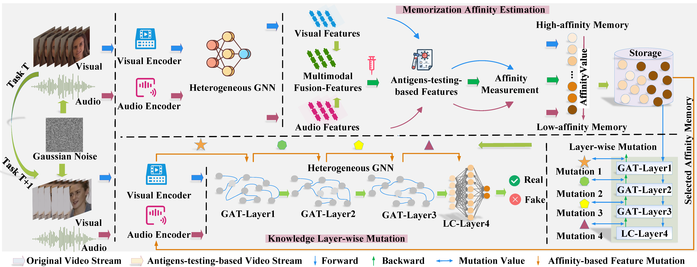

IEEE Transactions on Information Forensics and Security
Adaptive Affinity Memorization with Layer Mutation for Multimodal Deepfake Continual Detection
Amber is a replay-based continual learning method for multimodal deepfake detection. It selects high-affinity and low-affinity memories and mutates layer-wise knowledge to preserve historical forgery knowledge while adapting to new audio-visual manipulation techniques.